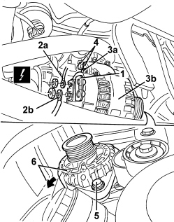
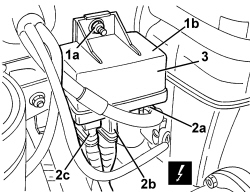
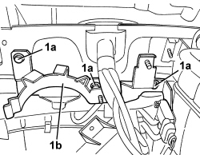
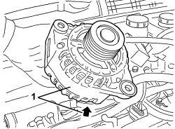
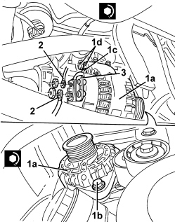
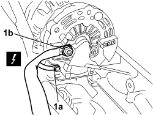
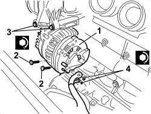
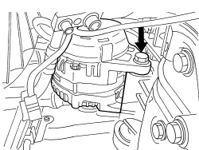
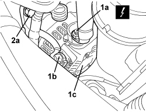
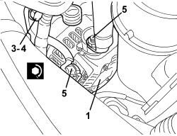

5530A10 ALTERNATOR - R+R
- Path
- Procedures > 55 ELECTRICAL EQUIPMENT > 5530 CURRENT GENERATION > 5530A ALTERNATOR AND COMPONENTS > 5530A10 ALTERNATOR - R+R
- Kind
- repair procedure (removal / refitting; the operation number is the code)
- Applies to
- engines: 1.9 JTS, 2.2 JTS, 1.9 JTD 8V, 1.9 JTD 16V, 2.4 JTD 20V; all production periods
- Interactive page
- https://sloeber94.github.io/elrnDB/alfa/159/en/#/939011014
Applies to: engines: 1.9 JTD 8V, 1.9 JTD 16V; all production periods
 Removing
Removing
 Refitting
RefittingOp. 4450B04 RIGHT FRONT WHEEL - R.R
Op. 7055B54 UNDER ENGINE PROTECTION/GUARD - R.R.
Op. 1092G10 SINGLE ENGINE BELT - R.R
1. Release and open the cover for the alternator electrical connections.
2. Disconnect the electrical connections (2a) and (2b) for the alternator.
Description | Component |
|---|---|
ALTERNATOR |
3. Undo the upper bolt (3a) fixing the alternator (3b).
4. Loosen the bolt for the reaction bracket.
5. Undo the lower bolt fixing the alternator.
6. Release the alternator from its housing and rest it on the components underneath.

Applies to: engines: 1.9 JTD 8V, 1.9 JTD 16V; all production periods
- Lower the vehicle.
Op. 1044B10 FUEL FILTER ASSEMBLY - R + R OR REPLACE
1. Undo the bolt (1a) and move the heater plugs control unit (1b) to the side.

Applies to: engines: 1.9 JTD 8V, 1.9 JTD 16V; all production periods
1. Undo the bolts (1a) and move the support (1b) to the side.

Applies to: engines: 1.9 JTD 8V, 1.9 JTD 16V; all production periods
1. Extract the alternator.

Applies to: engines: 1.9 JTD 8V, 1.9 JTD 16V; all production periods
Refitting
Removing- Check that the alternator is not damaged.
- Fit the alternator from above.
- Place the diesel filter mounting in position and tighten the bolts.
Component | Fastening | dia | Value (daNm) | Validity |
|---|---|---|---|---|
DIESEL FILTER MOUNTING | Bolt | M6x18 | 0.7 ÷ 1.1 | 1.9 JTD 8V 1.9 JTD 16V 2.4 JTD 20V |
- Position the heater plugs control unit and secure it using the nut.
Component | Fastening | dia | Value (daNm) | Validity |
|---|---|---|---|---|
HEATER PLUGS CONTROL UNIT | Nut | M6 | 0.7 ÷ 1.1 | 1.9 JTD 8V 1.9 JTD 16V 2.4 JTD 20V |
Op. 1044B10 FUEL FILTER ASSEMBLY - R + R OR REPLACE
- Raise the vehicle.
1. Place the alternator (1a) in position and tighten the lower (1b) and upper (1c) bolts; then also tighten the bolt for the bracket (1d). Tighten the alternator bolts to the recommended torque.
Component | Fastening | dia | Value (daNm) | Validity |
|---|---|---|---|---|
ALTERNATOR | Bolt | M12x1.75x90 | 6.3 ÷ 7.7 | 1.9 JTD 8V 1.9 JTD 16V |

Applies to: engines: 1.9 JTD 8V, 1.9 JTD 16V; all production periods
Component | Fastening | dia | Value (daNm) | Validity |
|---|---|---|---|---|
ALTERNATOR | Bolt | M12x1.75x40 | 6.3 ÷ 7.7 | 1.9 JTD 8V 1.9 JTD 16V |
Component | Fastening | dia | Value (daNm) | Validity |
|---|---|---|---|---|
ALTERNATOR BRACKET | Bolt | M12x1.75x30 | 6.3 ÷ 7.7 | 1.9 JTD 8V 1.9 JTD 16V |
2. Connect the electrical connections for the alternator and secure them using the nuts.
3. Close the cover for the electrical connections.
Op. 1092G10 SINGLE ENGINE BELT - R.R
Applies to: engines: 1.9 JTS, 2.2 JTS; all production periods
Removing
RefittingOp. 4450B04 RIGHT FRONT WHEEL - R.R
Op. 1048A28 VACUUM AIR CIRCUIT RESONATOR PIPE - R+R
Op. 1048A34 SLEEVE(S) FROM FLOW METER TO AIR SUPPLY CAPACITY CASE - R + R
Op. 1092C26 BELT FROM AIR CONDITIONER COMPRESSOR DRIVING POWER STEERING PUMP - R + R
Op. 1092G10 SINGLE ENGINE BELT - R.R
Op. 1056F17 THROTTLE BODY WITH DVL R R
Op. 1072B50 AIR CHAMBER - R.R.
1. Undo the bolt.
2. Keep the intake chamber mounting bracket.

Applies to: engines: 1.9 JTS, 2.2 JTS; all production periods
1. Undo the nuts and disconnect the electrical connections (1a) and (1b) for the alternator.
Description | Component |
|---|---|
ALTERNATOR |

Applies to: engines: 1.9 JTS, 2.2 JTS; all production periods
- Loosen the bolt retaining the power assisted steering pump.
1. Undo the two upper bolts fixing the alternator.
2. Undo the two lower bolts fixing the alternator.
3. Release the alternator from its housing and extract it.

Applies to: engines: 1.9 JTS, 2.2 JTS; all production periods
Refitting
Removing- Check that the alternator is not damaged.
1. Place the alternator in position and tighten the two upper and lower bolts.
2. Tighten the lower bolts to the specified torque.
Component | Fastening | dia | Value (daNm) | Validity |
|---|---|---|---|---|
ALTERNATOR | Bolt | M8x95 | 2.2 ÷ 2.6 | 1.9 JTS 2.2 JTS |
3. Tighten the upper bolts to the specified torque.
Component | Fastening | dia | Value (daNm) | Validity |
|---|---|---|---|---|
ALTERNATOR | Bolt | M8x120 | 2.2 ÷ 2.6 | 1.9 JTS 2.2 JTS |
- Tighten the bolt securing the power steering pump to the recommended torque.
Component | Fastening | dia | Value (daNm) | Validity |
|---|---|---|---|---|
POWER STEERING PUMP | Bolt | M8x20 | 2.8 ÷ 2.2 |
4. Connect the electrical connections for the alternator and tighten the nuts to the recommended torque.
Component | Fastening | dia | Value (daNm) | Validity |
|---|---|---|---|---|
RECHARGING LEAD | Nut | M8 | 0.9 ÷ 1.3 |
Component | Fastening | dia | Value (daNm) | Validity |
|---|---|---|---|---|
ALTERNATOR ENERGIZING LEAD | Nut | M5 | 0.5 ÷ 0.7 |

Applies to: engines: 1.9 JTS, 2.2 JTS; all production periods
- Position the mounting bracket for the intake chamber and secure it using the bolt.
Op. 1072B50 AIR CHAMBER - R.R.
Op. 1056F17 THROTTLE BODY WITH DVL R R
Op. 1092G10 SINGLE ENGINE BELT - R.R
Op. 1092C26 BELT FROM AIR CONDITIONER COMPRESSOR DRIVING POWER STEERING PUMP - R + R
Op. 1048A34 SLEEVE(S) FROM FLOW METER TO AIR SUPPLY CAPACITY CASE - R + R
Applies to: engines: 2.4 JTD 20V; all production periods
Removing
Refitting
Applies to: engines: 2.4 JTD 20V; all production periods
Op. 0010T84 COOLANT FOR AIR CONDITIONING SYSTEM - DEHYDRATE AND REPRESSURIZE
Op. 7055B54 UNDER ENGINE PROTECTION/GUARD - R.R.
Op. 4450B04 RIGHT FRONT WHEEL - R.R
Op. 7055B91 RIGHT FRONT WHEEL ARCH LINER - R.R.
Op. 1092C26 BELT FROM AIR CONDITIONER COMPRESSOR DRIVING POWER STEERING PUMP - R + R
Op. 5040A20 AIR CONDITIONING COMPRESSOR - R+R - INCLUDES FLUID LEVEL CHECK AND TOP UP IF NECESSARY
1. Working from the top of the engine compartment, unscrew electrical connections (1a) and (1b) of alternator (1c).
Description | Component |
|---|---|
ALTERNATOR |
2. Unscrew upper bolt (2a) of alternator (1c).

Applies to: engines: 2.4 JTD 20V; all production periods
1. Raise the vehicle, then unscrew bolts (1a) and remove the air outlet sleeve (1b) from the turbine.
2. Undo the lower alternator bolt.
3. Remove the alternator.

Applies to: engines: 2.4 JTD 20V; all production periods
- If the engine must be removed, proceed as follows:
Op. 1004B10 POWER UNIT WITH MANUAL GEARBOX - R.R
Op. 1092C26 BELT FROM AIR CONDITIONER COMPRESSOR DRIVING POWER STEERING PUMP - R + R
Op. 5040A20 AIR CONDITIONING COMPRESSOR - R+R - INCLUDES FLUID LEVEL CHECK AND TOP UP IF NECESSARY
- Recover the alternator drive belt.
1. Undo the bolts.
2. Remove the tensioner.

Applies to: engines: 2.4 JTD 20V; all production periods
1. Disconnect the electrical connection (1a), undo the nut and disconnect the electrical connection (1b).
Description | Component |
|---|---|
ALTERNATOR |

Applies to: engines: 2.4 JTD 20V; all production periods
1. Undo the upper bolt.
2. Undo the lower bolt.
3. Keep the alternator releasing the retainers for the cables.

Applies to: engines: 2.4 JTD 20V; all production periods
Refitting
Removing- Check that the alternator is not damaged.
- If the engine has been removed, proceed as follows:
1. Place the alternator in the housing.
2. Tighten the lower bolt.
Component | Fastening | dia | Value (daNm) | Validity |
|---|---|---|---|---|
ALTERNATOR | Bolt | M12x1.25x120 | 6.3 ÷ 7.7 | 2.4 JTD 20V |
3. Tighten the upper bolt.
Component | Fastening | dia | Value (daNm) | Validity |
|---|---|---|---|---|
ALTERNATOR | Bolt | M10x1.25x45 | 4.5 ÷ 5.5 | 2.4 JTD 20V |

Applies to: engines: 2.4 JTD 20V; all production periods
- Connect the electrical connections for the alternator.
- Position the tensioner and secure it using the bolts.
Op. 5040A20 AIR CONDITIONING COMPRESSOR - R+R - INCLUDES FLUID LEVEL CHECK AND TOP UP IF NECESSARY
Op. 1092C26 BELT FROM AIR CONDITIONER COMPRESSOR DRIVING POWER STEERING PUMP - R + R
Op. 1004B10 POWER UNIT WITH MANUAL GEARBOX - R.R
- If only the alternator has been removed, proceed as follows:
1. Position the alternator and tighten the lower bolt.
2. Position the air outlet sleeve (2a) from the turbine and tighten bolts (2b).
3. Tighten the alternator upper bolt.
4. Tighten the alternator fixing bolts to the recommended torque.
Component | Fastening | dia | Value (daNm) | Validity |
|---|---|---|---|---|
ALTERNATOR | Bolt | M12x1.25x120 | 6.3 ÷ 7.7 | 2.4 JTD 20V |
Component | Fastening | dia | Value (daNm) | Validity |
|---|---|---|---|---|
ALTERNATOR | Bolt | M10x1.25x45 | 4.5 ÷ 5.5 | 2.4 JTD 20V |
5. Connect the electrical connections for the alternator.


Applies to: engines: 2.4 JTD 20V; all production periods
Op. 5040A20 AIR CONDITIONING COMPRESSOR - R+R - INCLUDES FLUID LEVEL CHECK AND TOP UP IF NECESSARY
Op. 1092C26 BELT FROM AIR CONDITIONER COMPRESSOR DRIVING POWER STEERING PUMP - R + R
Op. 7055B91 RIGHT FRONT WHEEL ARCH LINER - R.R.
Op. 4450B04 RIGHT FRONT WHEEL - R.R
Op. 7055B54 UNDER ENGINE PROTECTION/GUARD - R.R.
Op. 0010T84 COOLANT FOR AIR CONDITIONING SYSTEM - DEHYDRATE AND REPRESSURIZE
Topics linked from this page (15)
- 0010T84 COOLANT FOR AIR CONDITIONING SYSTEM - DEHYDRATE AND REPRESSURIZE
- 1004B10 POWER UNIT WITH MANUAL GEARBOX - R.R
- 1044B10 FUEL FILTER ASSEMBLY - R + R OR REPLACE
- 1048A28 VACUUM AIR CIRCUIT RESONATOR PIPE - R+R
- 1048A34 SLEEVE(S) FROM FLOW METER TO AIR SUPPLY CAPACITY CASE - R + R
- 1056F17 THROTTLE BODY WITH DVL R R
- 1072B50 AIR CHAMBER - R.R.
- 1092C26 BELT FROM AIR CONDITIONER COMPRESSOR DRIVING POWER STEERING PUMP - R + R
- 1092G10 SINGLE ENGINE BELT - R.R
- 4450B04 RIGHT FRONT WHEEL - R.R
- 5040A20 AIR CONDITIONING COMPRESSOR - R+R - INCLUDES FLUID LEVEL CHECK AND TOP UP IF NECESSARY
- 7055B54 UNDER ENGINE PROTECTION/GUARD - R.R.
- 7055B91 RIGHT FRONT WHEEL ARCH LINER - R.R.
- 7210E10 R.R. FRONT BUMPER
- A010 ALTERNATOR